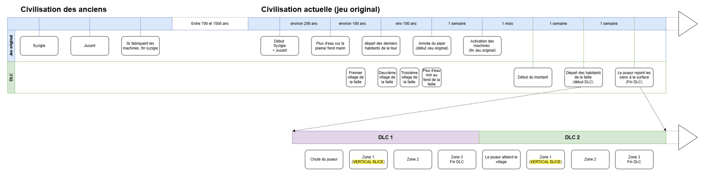

Jusant DLC is a school project we made in two month. The aim was to create the vertical slice of a potential dlc for the game Jusant, after speaking whith the core team from studio.
Here’s how it turned out :
We were two teams of 6 and 7 people, composed each of game designers and tech artists
[Gallery images]
For this project, I worked mainly on three aspects :
Narrative design
With the help of the team behind the original game, and some strangers on forums arguing on the theories about the game story, I studied all the aspects and temporalities of the lore. Then, I worked with my colleagues on their story ideas to ensure they were consistent with the rules of the universe
Finally,

Game design - Core and environmental mechanics
The goal here was to add an unique core mechanic, which had to be credible in the game lore.
We took inspiration in the original game, where the main action is to climb, and the second is to use environmental objects with the help of your cute water companion. So, after many other ideas, we decided to replace the companion mechanic by an other one. I suggested that the new companion could carry us on it s back